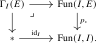

Let \(E\to I\) be the cocartesian unstraightening of a diagram \(I\to \Cat _{\infty }\). Our next goal is to give explicit descriptions of the limit and colimit of this functor: Its colimit is obtained from \(E\) by inverting the cocartesian morphisms, while its limit is the category of cocartesian sections. We first define these two constructions.
Construction 23.5.1. Let \(p\colon E \to I\) be a cocartesian fibration.
- We write \(E[\cc ^{-1}]\) for the localization of \(E\) at the collection of \(p\)-cocartesian morphisms.
- We write \(\Gamma _I(E)\) for the \(\infty \)-category of sections of \(p\), defined via the following pullback square:

- We write \(\Gamma _I^{\cc }(E)\) for the full subcategory of \(\Gamma _I(E)\) spanned by the cocartesian sections: those sections that are cocartesian functors over \(I\) (i.e., that send arbitary morphisms in \(I\) to \(p\)-cocartesian morphisms in \(E\)).
Proposition 23.5.2. Let \(I\) be a small \(\infty \)-category and let \(F\colon I \to \Cat _{\infty }\) be a functor.
- (1)
-
The functor \(F\) admits a colimit in \(\Cat _{\infty }\), which can be computed by the formula \[ \colim _I F(i) \simeq \Un ^{\cc }(F)[\cc ^{-1}]. \]
- (2)
-
The functor \(F\) admits a limit in \(\Cat _{\infty }\), which can be computed by the formula \[ \lim _I F(i) \simeq \Gamma _I^{\cc }(\Un ^{\cc }(F)). \]
Proof. See Theorem 12.2.1, Theorem 12.2.4 of [Cisinski et al. (2026)]. □
Proposition 23.5.3 (Fiberwise colimits over cocartesian fibrations). Let \(p\colon E\to J\) be a cocartesian fibration between small \(\infty \)-categories and let \(G\colon E\to C\) be a functor. Assume that the restriction \(G\vert _{E_j}\colon E_j\to C\) admits a colimit for every \(j\in J\). Then the left Kan extension \(p_!G\colon J\to C\) exists and is given pointwise by \[ (p_!G)(j)\simeq \colim _{E_j}G\vert _{E_j}. \] Moreover, \(G\) admits a colimit if and only if \(p_!G\) admits a colimit, and in this case there is an isomorphism \[ \colim _EG\cong \colim _Jp_!G. \] Dually, fiberwise limits over a cartesian fibration assemble into a right Kan extension and may be computed by first taking the fiberwise limits and then the limit over the base.
Proof. See Proposition 12.2.14 of [Cisinski et al. (2026)]. □
Corollary 23.5.4. Let \(I\) be a small \(\infty \)-category and let \(F\colon I \to \An \) be functor.
- (1)
-
The functor \(F\) admits a colimit in \(\An \), which can be computed by the formula \[ \colim _I F(i) \simeq \geom {\Un ^{\cc }(F)}. \]
- (2)
-
The functor \(F\) admits a limit in \(\An \), which can be computed by the formula \[ \lim _I F(i) \simeq \Gamma _I(\Un ^{\cc }(F)). \]
Proof. We compute the limit and colimit in \(\Cat _{\infty }\) and observe that it is still in \(\An \). For (1) this is clear: all morphisms in \(\Un ^{\cc }(F)\) are cocartesian, see Proposition 23.1.16, hence inverting all cocartesian morphisms gives an anima. For (2), any section \(s\colon I \to \Un ^{\cc }(F)\) of \(p_F\) is cocartesian, again since all morphisms are cocartesian, so \(\Gamma ^{\cc }_I(\Un ^{\cc }(F)) = \Gamma _I(\Un ^{\cc }(F))\). Note that this is already an anima: any morphism of sections is invertible since all fibers of \(p_F\colon \Un ^{\cc }(F) \to I\) are animae. □
Adjunctions between the values of two diagrams induce an adjunction between their limits, provided the right adjoints commute with the transition functors. The Beck–Chevalley condition expresses this compatibility:
Proposition 23.5.5 (Limits of adjunctions). Let \(K\) be a small \(\infty \)-category and consider functors \(C_{\bullet },D_{\bullet }\colon K \to \Cat _{\infty }\). Let \(F_{\bullet } \colon C_{\bullet } \to D_{\bullet }\) be a natural transformation satisfying the following two conditions:
- (1)
-
(Pointwise adjoints) The functor \(F_k\colon C_k \to D_k\) admits a right adjoint \(G_k\colon D_k \to C_k\) for every \(k \in K\);
- (2)
-
(Beck-Chevalley condition) For every morphism \(f\colon k \to k'\) in \(K\), the Beck-Chevalley transformation \(\BC \colon f_* G_k \to G_{k'} f_*\), defined as the composite \[ f_* G_k \xrightarrow {\mathrm {unit}} G_{k'} F_{k'} f_* G_k \cong G_{k'} f_* F_{k} G_k \xrightarrow {\mathrm {counit}} G_{k'} f_*, \] is a natural isomorphism.
Then the functors \(G_k\) assemble into a natural transformation \(G_{\bullet }\colon D_{\bullet } \to C_{\bullet }\), and the units and counits assemble into natural transformations \(\varepsilon _{\bullet }\colon F_{\bullet } \circ G_{\bullet } \to \id _{\bullet }\) and \(\eta _{\bullet }\colon \id _{\bullet } \to G_{\bullet } \circ F_{\bullet }\) that satisfy the triangle identities.
As a result, the induced functors \[ F:= \lim _k F_{k}\colon \lim _k C_k \to \lim _k D_k \qquadtext { and } G := \lim _k G_k \colon \lim _k D_k \to \lim _k C_k \] are adjoint to each other.
Proof. By the dual of [Lurie (2017), Proposition 7.3.2.6], the cocartesian functor obtained by unstraightening \(F_\bullet \) admits a right adjoint over \(K\), with unit and counit over \(K\). Its restriction to the fiber over \(k\) is \(G_k\). For \(f\colon k\to k'\) and \(d\in D_k\), it sends a cocartesian arrow \(d\to f_*d\) to the composite \[ G_kd\longrightarrow f_*G_kd\xrightarrow {\BC _d}G_{k'}f_*d, \] where the first arrow is cocartesian. Since \(\BC _d\) is an isomorphism, the right adjoint preserves cocartesian morphisms. Straightening therefore gives \(G_\bullet \) and the asserted unit and counit.
Both functors restrict to the categories of cocartesian sections, and their unit and counit induce transformations on these categories satisfying the triangle identities. By Proposition 23.5.2, these section categories compute \(\lim _k C_k\) and \(\lim _k D_k\), giving the required adjunction. □
Corollary 23.5.6. Let \(I\) and \(K\) be small \(\infty \)-categories and let \(C_{\bullet }\colon K \to \Cat _{\infty }\) be a \(K\)-indexed diagram of small \(\infty \)-categories. Assume that \(C_k\) admits \(I\)-indexed limits (resp. colimits) for all \(k \in K\), and that the functor \(C_k \to C_{k'}\) preserves \(I\)-indexed limits (resp. colimits) for every morphism \(k \to k'\) in \(K\). Then the limit \(C:= \lim _{k \in K} C_k\) in \(\Cat _{\infty }\) also admits \(I\)-indexed limits (resp. colimits) and each functor \(C \to C_k\) preserves them.
Proof. See Proposition 12.2.10 of [Cisinski et al. (2026)]. □